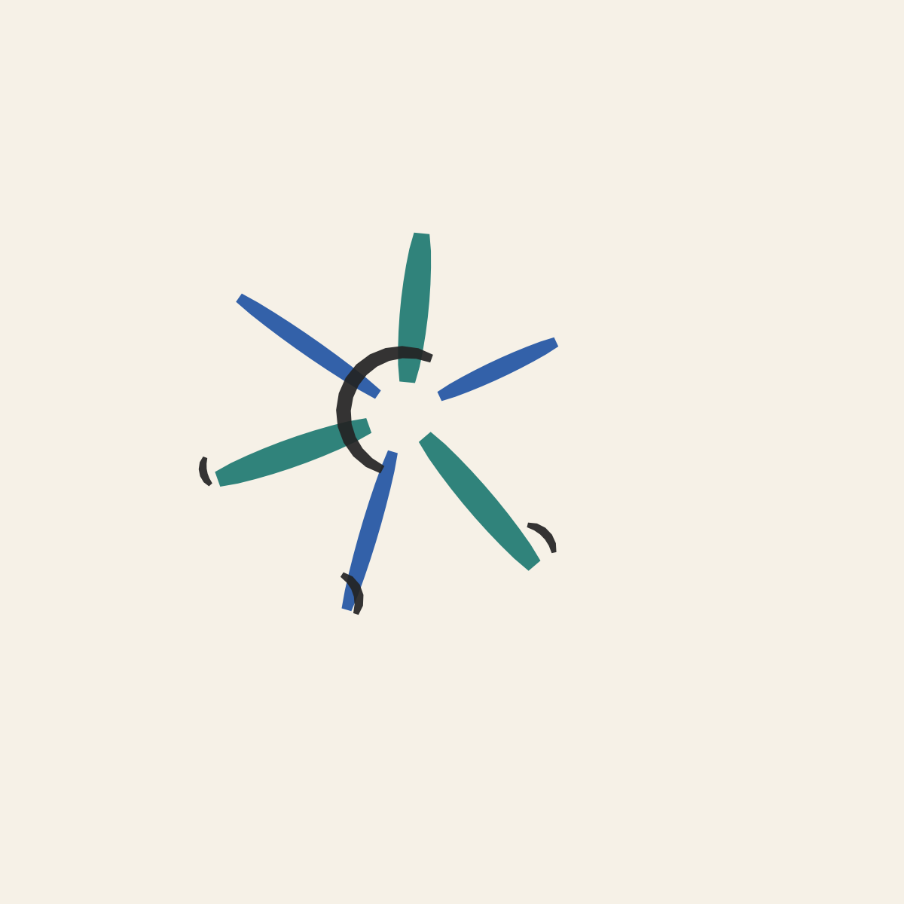

Try the composition step
This runs the same deterministic grammar-based composer as
sim/composition.py, in your browser — no server, no
model call. It stands in for the vision-language model described in
the research proposal; same answers always produce the same artwork.
- Style
- —
- Brush
- —
- Strokes
- —
- Robot
- —
- Palette
Why this painting
A short, template-filled explanation connecting the artwork back to your answers — revealed as the robot would paint it, stroke by stroke. It stands in for the vision-language model's own explanation in the full proposal; no model call happens here either.
Think first, then paint it exactly
For this example, a real Claude model decides the whole piece
before the robot moves — the grammar, the two pen
colors, the brush, and the rationale below are genuine model output,
not a template (see sim/llm_composer.py). The
interactive demo above runs a deterministic client-side stand-in
instead, since a static page with no backend can't make a real model
call. The robot then reproduces the model's exact plan in NVIDIA
Isaac Sim. Left: what the model composed. Right: the actual recorded
simulation of a Franka Emika Panda arm, full body, painting that
same plan via the RMPFlow motion controller — not a mockup;
see sim/ in the repository for the pipeline that
produced both.

“We center the piece on radiating_strokes because curious, outward-reaching energy matches a mood of curiosity and an aspiration to build robots that help people — each stroke pushes out from a shared core like an idea branching into action. Teal as the primary pen honors the visitor's stated favorite color directly, while blue as the secondary nods to Pittsburgh's rivers and steel-blue skyline. We chose the marker for crisp, confident lines with just enough taper to feel hand-made rather than mechanical, and a slight clockwise rotation and modest upscale give the burst a sense of forward motion and openness.”
See the intended-vs-executed trace overlay →
Simulation only, no physical robot or ink yet — there is no paint-deposition model, so the canvas itself stays blank in the video even as the arm moves correctly through the plan.
How it works
- Kiosk input. A visitor answers a few short, personal prompts, picks a style and (optionally) a pen/brush tool, and picks a robot platform.
- Semantic composition. The answers are composed into an artistic brief — a palette and a stroke "grammar" tied to the chosen style — and rendered as an ordered list of ≤10 vector strokes, each drawn with one of a small set of common pen colors — not custom-mixed paint. The pen/brush tool (fine pen, marker, brush, or watercolor dabs) is a separate choice from style, since the robot's tool holder carries a few distinct tool types, not just colors. This page runs that step directly in JavaScript.
- Stroke planning. Each stroke is a smooth planar curve with a pen-up/pen-down state — the same representation the robot execution layer consumes.
- Robot-agnostic execution. The stroke plan is retargeted to the selected robot's task frame and physically executed. Validated so far in simulation (NVIDIA Isaac Sim, Franka arm) — see
sim/in the repository.
Full details are in the project's bilingual research proposal (not
published in this repository). The sim/ directory has the
Isaac Sim validation pipeline and the composition module this page is
built on.